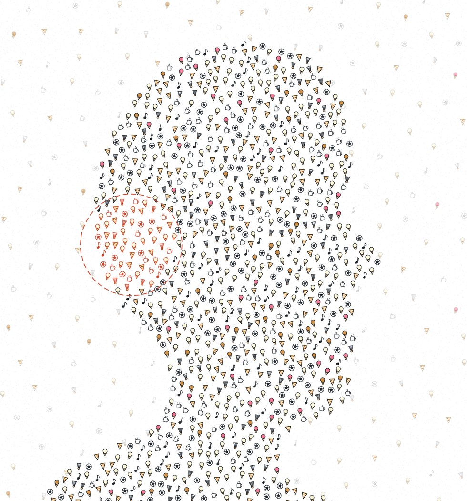
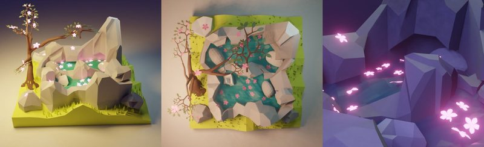
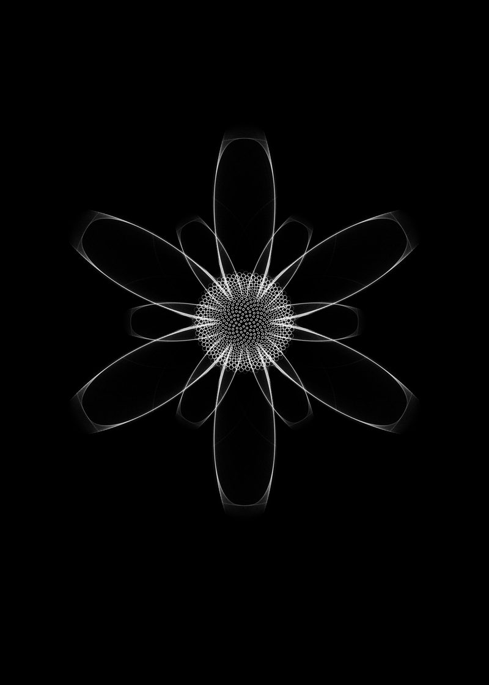
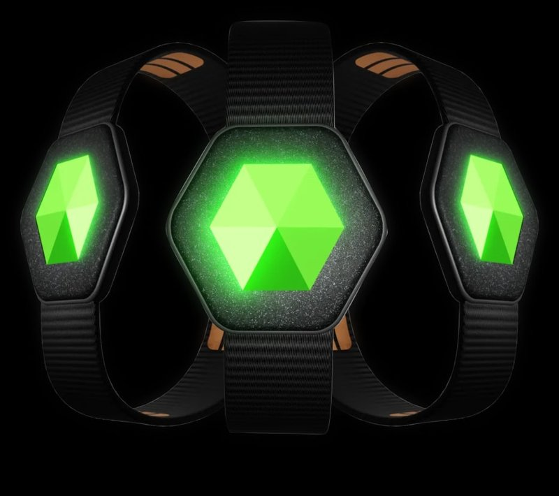
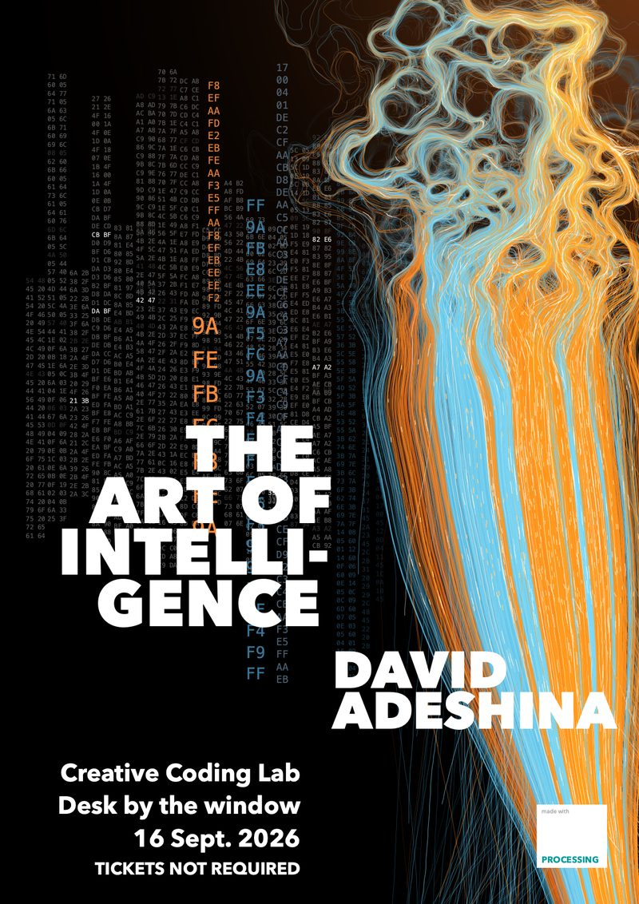
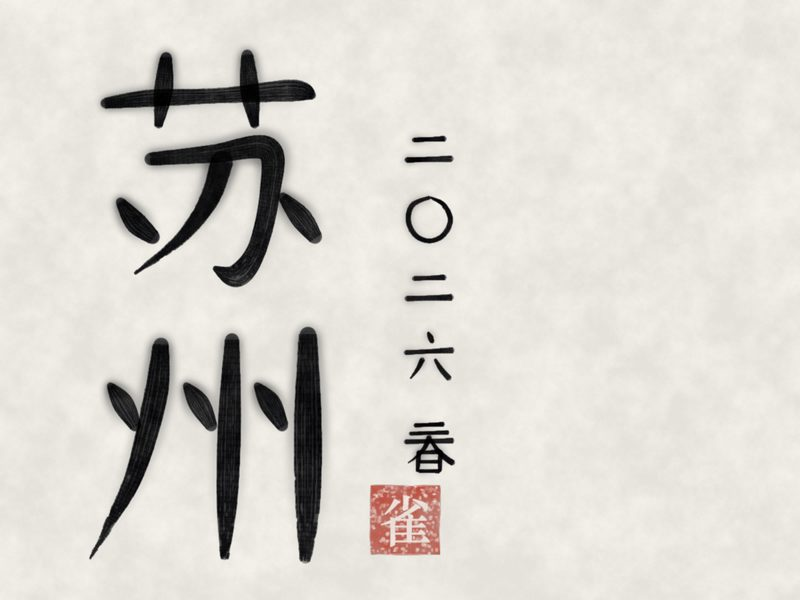

David Adeshina Arungbemi · also writes as Suzume
I follow what moves me, then test whether it's true.
Stories and images let us live other lives and come back changed. I'm curious what the future looks like when people and AI can do that for each other, and I build small experiments to find out.
- Now
- Research fellow at MARS 5.0, Cambridge AI Safety Hub, fine-tuning language models on stories
- Before
- Futurekind Fellowship in AI and animal welfare, where I wrote a preprint on stories and speciesism in language models
- Looking for
- A funded PhD, or a funded master's as a first step, starting in 2027. If you like what I do, get in touch →

Cover sketch for You Are What You Prefer · ink on paper, Processing · 2026
Research
I'm interested in how stories and images shape minds, human and artificial. Most of my work takes a humanistic question, such as what a story teaches, what makes an image beautiful, or who deserves moral consideration, turns it into a small experiment on an AI model, and reports honestly whether the idea held.
- Stories and AIHow stories change what language models say and do.14 pieces →
- Aesthetics and perceptionWhat images do to minds, and what models make of beauty.19 pieces →
- Visualisation and interactionMaking model behaviour and complex ideas visible, and letting people shape them.14 pieces →
- Minds and meaningHow meaning forms, in people and in models.8 pieces →
Publications
-
Preprint · not peer-reviewed · 2026
Narrative Transportation and Speciesism in Large Language Models
D. A. Arungbemi. Zenodo, 2026. Research done during Electric Sheep's Futurekind Fellowship.
Can a story make a language model care more about an animal? Five models read a story about an animal, the same facts written plainly, or nothing, then answered a speciesism questionnaire. On the questions about that animal, their speciesism, already modest, fell to nearly zero after the story; the plain facts generally did not change it. The effects were small in absolute terms.
-
Journal article · peer-reviewed · 2025
An End to End Wearable Device and System for Indefinite, Continuous, Real Time Gesture Recognition of Directional and Shape-Based Arm Gestures
Co-author. IEEE Access 13, 153436–153463, 2025.
A wearable that recognises arm gestures, both directions and drawn shapes, continuously and in real time. I designed its AI, from the raw motion data to the model that names each gesture, and the interface of the live app: how people experience the system as they use it.
doi:10.1109/ACCESS.2025.3602871Open access
Articles
I publish under my pen name, Suzume (雀, sparrow). If you've read Suzume on Medium or found suzume-hue on GitHub, that's me.
Experiments
-
Essay & experiment · Sep 2026
You Are What You Prefer
Vanilla or caramel, as a fingerprint of a model's character — and an alarm for when it has quietly changed.
-
Experiment · Apr 2026
Gestalt: The Whole is not the Sum of Its Parts
Can different parts make the same whole? Very different starting images converge on almost the same picture.
-
Experiment · Apr 2026
I Tried to Build an Aesthetic Model of the Human Brain. I Failed. Here’s What I Learned.
On neuroaesthetics, the BOLD5000 dataset, and what it means to optimise for beauty instead of truth.
-
Experiment · Apr 2026
I Ran the Experiment. Here Is What I Found.
It didn't confirm the hypothesis. It showed what a real test would need to look like.
-
Experiment · Mar 2026
Inside Qwen 0.5B: A Behavioral Profile Across 32 Dimensions
Most evaluations measure what a model knows. This one asks how a small model behaves when you push it.
-
Experiment · Mar 2026
I Gave Four AI Agents a Philosophy and Put Them Under Pressure.
Four agents, four philosophies, 640 turns under resource pressure. Their words held; their choices loosened.


Essays
-
Essay · Aug 2026
In Brightest Day, In Blackest Night, No Evil Shall Escape My Sight.
Why we tie evil to the dark, and where it hides when everything is lit: not in shadow, but in normality.
-
Essay · May 2026
Who Deserves Moral Consideration? I’m Not Sure Anymore.
If we can never see inside another mind, the question becomes what kind of people we want to be in our uncertainty.
-
Essay · Apr 2026
The Narrative Hypothesis: Complexity
Every person carries a narrative. When narratives meet, new ones form: a family, a community, a nation.
-
Essay · Apr 2026
The Narrative Hypothesis
What if the universe is a story? Not as a metaphor, but as the way reality is still unfolding.


Projects
-
TypeScript · React · 2026
Wen's Mindscape
An interactive profile of a small language model, Qwen 2.5 0.5B, drawn as a spirit called Wen: its real answers across 32 kinds of behaviour, as charts and a constellation you can explore.
-
Python · 2026
LLM Art Director
A language model that art-directs an image, ordering edits round by round from aesthetic scores. A model of human preference undoes any edit that raises the scores but that a person would probably like less.
-
Python · 2026
Aesthetics Optimizer
An attempt to predict the brain's fMRI response to a new image, personalised from a person's ranked image history, and a desktop app that tunes generative art to raise the prediction. The predictions were weak (mean r about 0.08), and the write-up covers why.
-
Python · 2025
Story GRU language model
A small model that writes stories, and a look inside it at how meaning builds up, word by word.
-
Python · notebook · 2025
Codebook Genome
A VQ-VAE turns each small image into a sequence of 64 codes, and the notebook reads them like DNA: as a strand, a grid and a ring, so every image has its own genome.


Worlds
Things that don't exist until someone makes them, in code, in 3D with Blender, and by hand.





Contact
If you like what I do — or disagree with any of it — I'd like to hear from you.
- EmailSend me an email →
- LinkedInlinkedin.com/in/davidadeshina
- GitHubdavidAdeshinaArungbemi · suzume-hue
- Writingsuzume1.medium.com
- PapersZenodo · IEEE Access
- Companygyronics.com